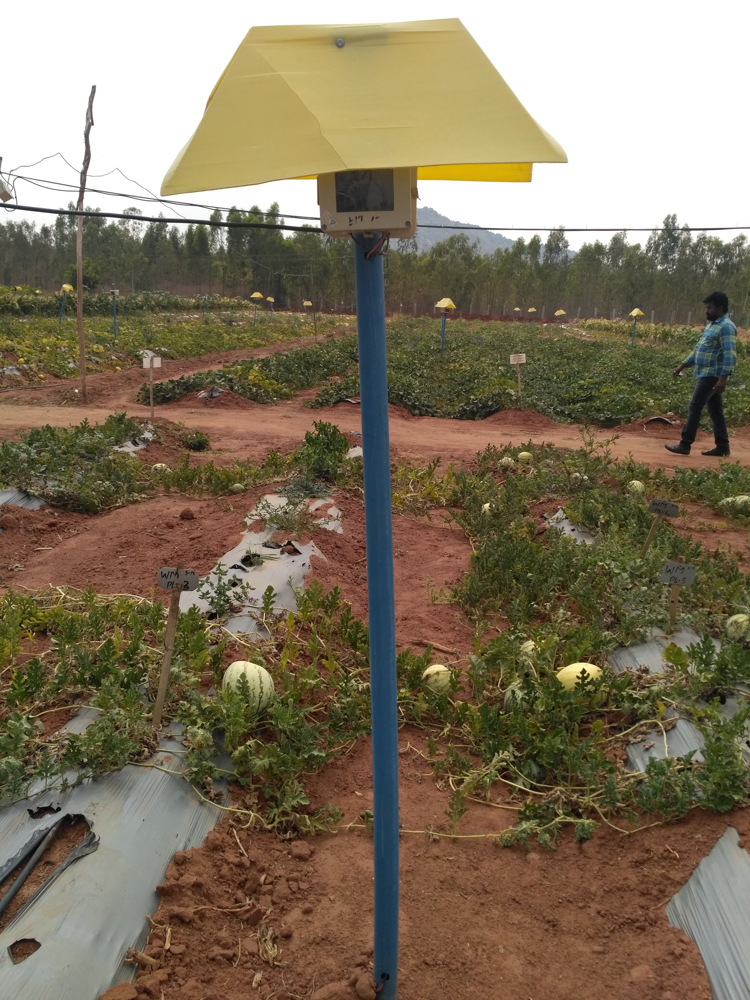
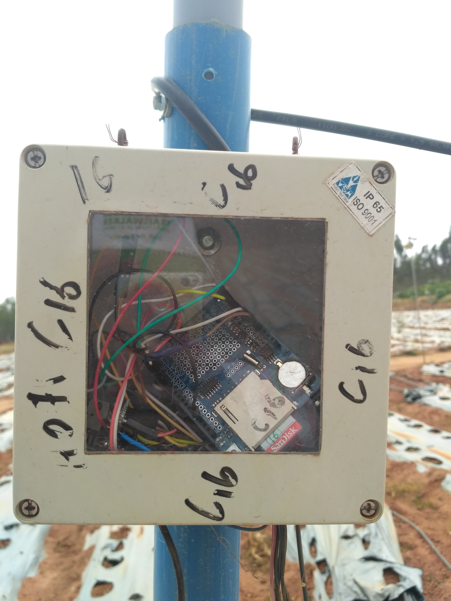
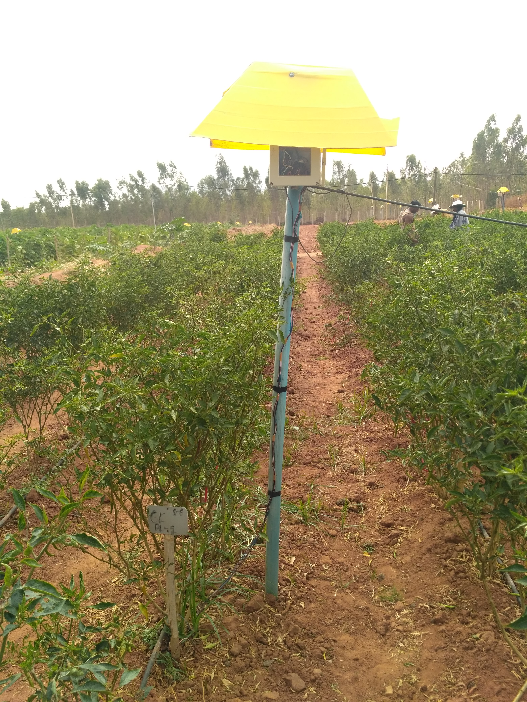
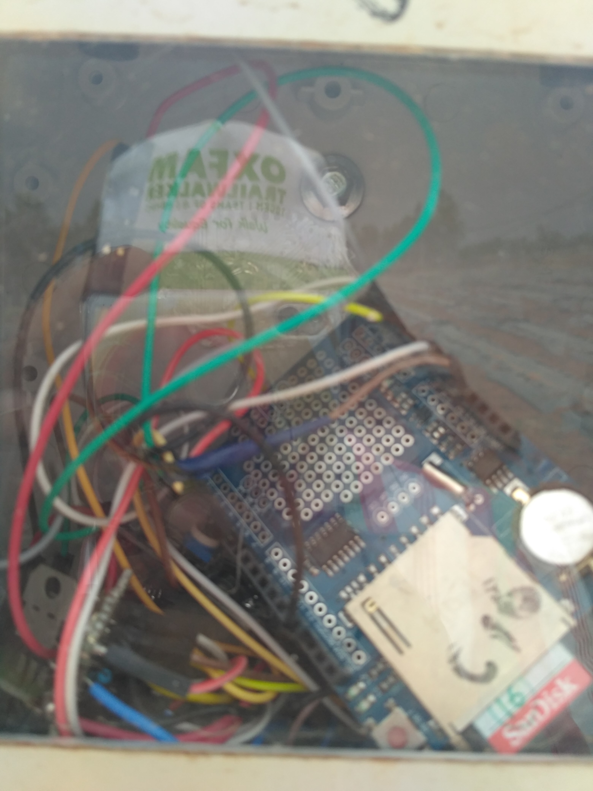

Welcome to Viki's research laboratory. We have been instrumental in various projects around the world, in the field of smart device design, embedded systems, computer networks and robotics. We have been constantly pushing technological barriers for more than a decade now by creating designs that aren't just efficient, but highly economical in comparison with the existing variants.
Our ideas and designs have helped set up startups across the world from Asia to the Silicon Valley. Have a peek at some of our projects which have been put up in here. This however, does not encompass every project of ours. We consult for large corporations, but since the projects and the data are confidential, we don't have the liberty of putting them up on the site.
Snakebots are most useful in situations where their unique characteristics give them an advantage over their environment. These environments tend to be long and thin like pipes or highly cluttered like rubble. Thus snakebots are currently being developed to assist search and rescue teams.
Furthermore, when a task requires a number of different obstacles to be overcome, the locomotive flexibility of snakebots makes them good candidates. For example, if you need a robot to carry a camera to the top of a tree that is growing in water you have to do three things: move over ground to the water's edge, swim to the tree, and then climb the tree. You could make a robot that does any one of those three very well, but being able to do all three, and many other difficult combinations, is what makes snake robots exceptional.
A quadcopter, also called a quadrotor helicopter or quadrotor, is a multirotor helicopter that is lifted and propelled by four rotors. Quadcopters are classified as rotorcraft, as opposed to fixed-wing aircraft, because their lift is generated by a set of rotors (vertically oriented propellers). They generally use two pairs of identical fixed pitched propellers; two clockwise (CW) and two counterclockwise (CCW). These use independent variation of the speed of each rotor to achieve control. By changing the speed of each rotor it is possible to specifically generate a desired total thrust; to locate for the centre of thrust both laterally and longitudinally; and to create a desired total torque, or turning force.
   
We have designed and implemented the initial phase of IoT farmland automation technology in India. This design costs one third of the current technology implemented across European farmlands while being as efficient and long lasting. We plan on scaling this into a spinoff and are looking at Europe right now as a potential market.